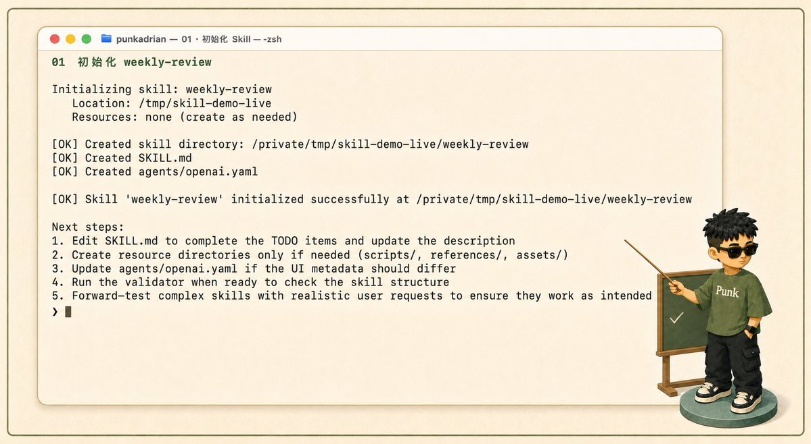
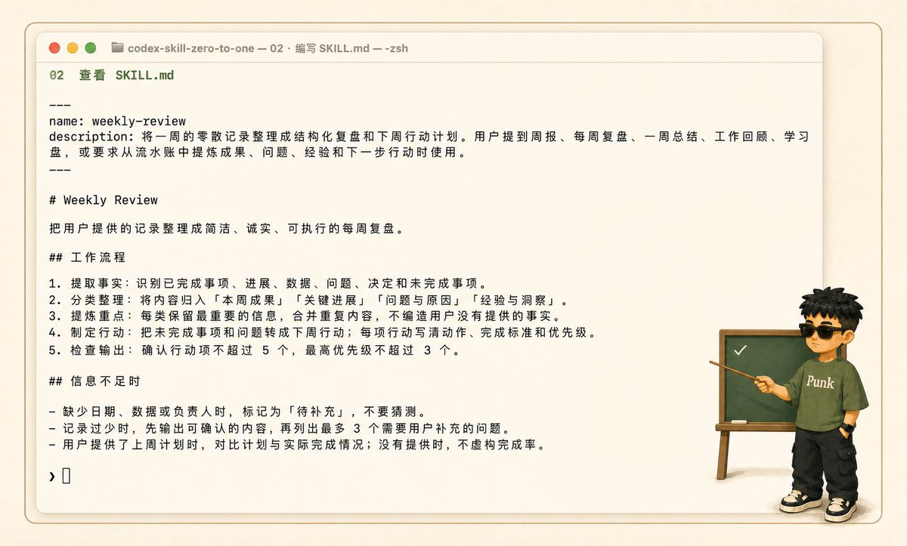
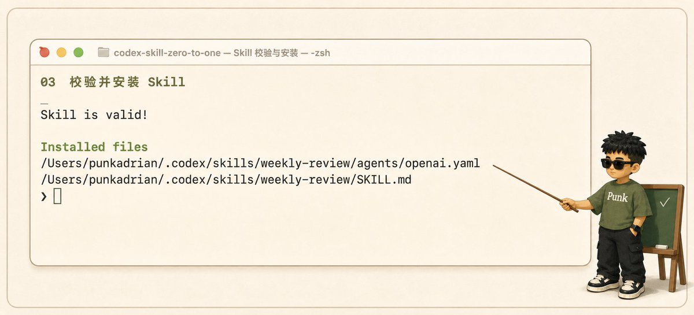
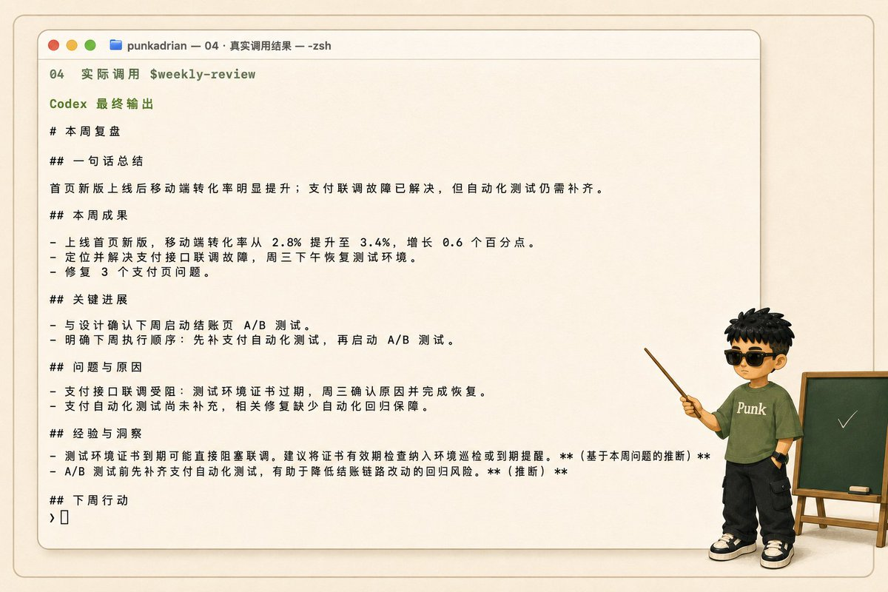

CODEX SKILL · FROM ZERO TO ONE
别再重复
向 AI 解释
把固定工作流
沉淀成自己的 Skill
提示词→工作流→Skill
WHAT IS A SKILL?
提示词解决一次
Skill 固化一类
SHOULD IT BECOME A SKILL?
先问 4 个问题
1这件事会重复发生？
2输入和输出相对稳定？
3有固定步骤和判断标准？
4换个 AI 还要重新解释？
至少 3 个“是” → 值得沉淀
WORKFLOW CARD
先写一张
工作流卡片
01什么时候启动
02用户提供什么
03按什么步骤执行
04最终输出什么
05怎样算合格
06信息不足怎么办
TRIGGER TESTS
准备 3 个
真实触发案例
明确点名自然表达信息不完整

01 · 用 skill-creator 初始化
MINIMUM VIABLE SKILL
从最小结构开始

02 · description 管触发，正文管执行
scripts/ 重复代码references/ 长资料assets/ 模板
WRITE FOR EXECUTION
触发与执行
分开写
description告诉 Codex
什么时候使用

03 · 校验结构，再安装
REAL-WORLD TEST
验证通过
≠ 真正好用

04 · 用真实任务测试，不要只看格式
SHIP & IMPROVE
跑通，再沉淀
真实任务 → Skill → 持续迭代
来源：Adrian Punk @AdrianPunk115 · X Article
每周重复发同一套要求？你缺的可能不是提示词，而是 Skill
最小版本只需要 SKILL.md，其余目录按需增加
description 决定何时触发，正文决定如何执行